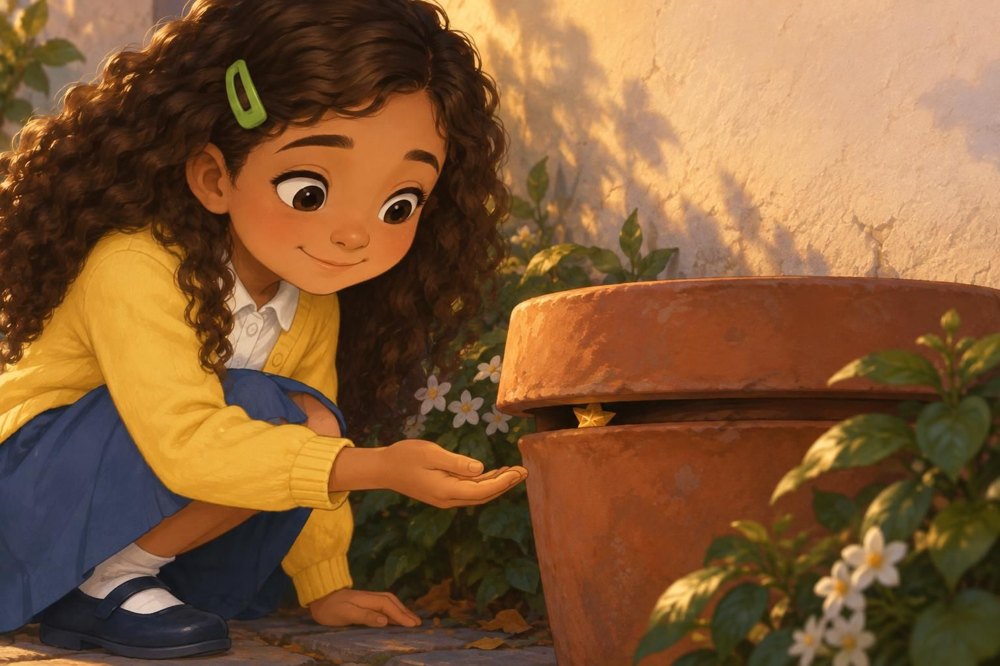
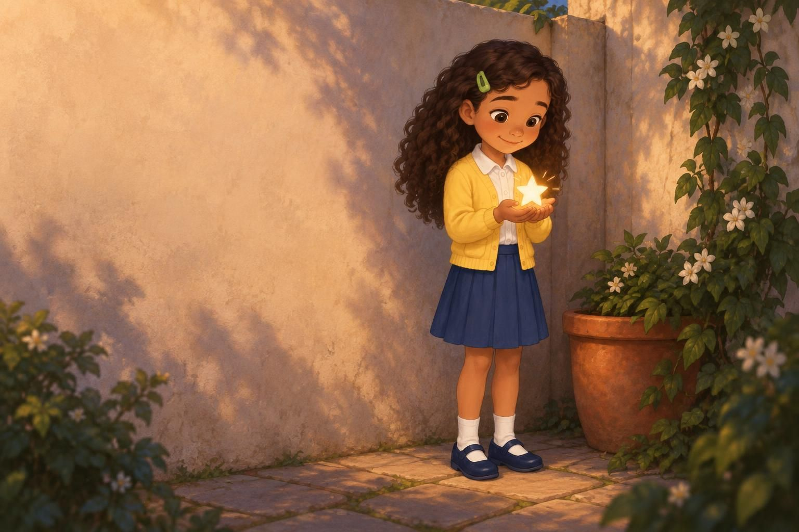
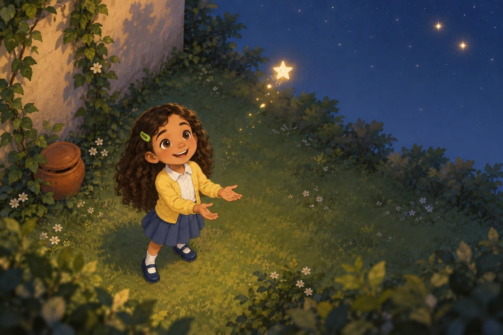

A Blinkfor theSky
 A Wondii Story
A Wondii Story
Preview only. Cover title uses the current default layout. The pictures are unchanged.
A Wondii Story
A flicker caught Maya's eye beneath the flowerpot. She looked up at the sky. When she looked back, the gap was dark.
p1
Maya bent down beside the flowerpot. Under its rim, a star had tucked its points inward. "Here," she whispered, holding out an open hand.
p2
The star climbed onto her palm. Maya pointed up. Its points folded tight again.
p3
Maya cupped both hands around the star. One point opened, then another. A single blink shone against her fingers.
p4
She opened her hands. Closed them. Opened them again. The star answered: blink, blink.
p5
Maya lifted the star towards the narrow patch of sky. It blinked twice. She waited, but no light blinked back.
p6
The star tucked its points against Maya's thumb. She tipped her head back. The wall hid so much of the sky.
p7Into the open garden, Maya carried the star. She kept one hand beside it. Above them, lights dotted the wide sky.
p8
On her palm, the star unfolded. It tried two blinks. Two distant lights blinked back.
p9
Maya opened her hands. The star rose into the sky, blinking as it went. The distant lights kept answering.
p10
Her empty hands opened and closed once more. One star blinked back. Maya's yellow sleeves settled beneath its light.
p11